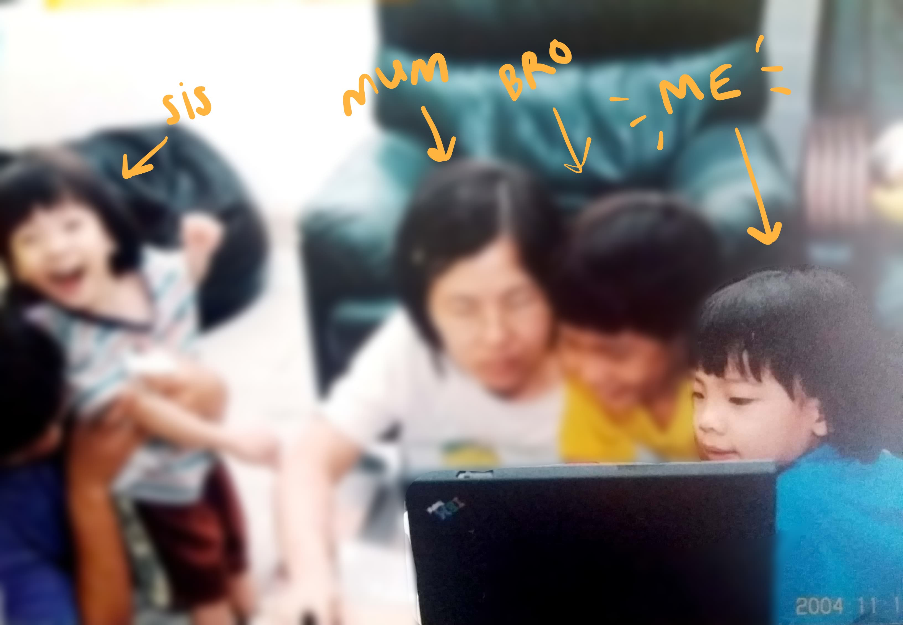

🌻THE MENTORSHIP EXPERIENCE🌻
From 0... to a value more than 0.
By Edelyn & Wendy
☁ Introducing me! ☁
 As you can tell... from a young age, I really did like computers.
This is me, at 3 years old.
I'm 18.
I'm involved in these teams this year:
NG-MY 2019
Core team member
Rails Girls KL
Core team member
Women Who Code KL
Volunteer
Other than that, I'm in Pulsifi as an intern!

As I stepped foot into Pulsifi, I...
As I stepped foot into Pulsifi, I...
But what did I learn?
Although my contributions are small, but I'm learning more things everyday!
Things I got to play around with


With the help from my mentors and the team, I learnt..
- About Agile
- How sprints work
- How to use a macbook!
- How to use excel and all its benefits
- How to create slides using HTML 😛
Why is being a mentee at a startup company is great?
- Have a role model
- Learning things wouldn't be so difficult
- Get to ask my mentors anything (even the dumbest questions!)
- Have a better relationship in comparision to my other coworkers
- Start to wonder, what kind of responsibilities I would have if I were a mentor in the future...
Hi I'm Wendy
(the so-called mentor)
I'm a software engineer at Pulsifi.

Previously writing in .NET, now Angular/NodeJS. I lend a hand at a couple of tech communities in KL.
Mentor
Someone who teaches or gives help and advice to a less experienced and often younger person.
Under-represented employees can be supported and developed by talking to others who have overcome similar barriers. (to paraphrase David Clutterbuck)
ΜΕΝΤΩΡ

In Homer's Odyssey, he is Odysseus' friend & watches over his son Telemachus.
Goddess of wisdom Athena took the form of Mentor & gave Telemachus advice.
Forms of mentoring
"Traditional" mentoring
Senior to junior
Peer mentoring
Similar skill levels
One-off mentoring
e.g. Coding workshops, random advice


Motivation to mentor
Why do it?

- Because boss told me to.
- It's a good challenge.
- Put your skills to the test.
- Reduce silos.
- Change of pace/different perspective.
- Pass it forward!
The Stages of Mentoring
Stage 1: Fear of failure

"What if I teach them the wrong things?"
Stage 2: Acceptance

"Surely I can make a difference. I know my stuff."
Stage 3: Self-reflection

"Just give me a moment" *Googles basic syntax*
Stage 4: Progress

"YOU are a rockstar!"
Takeaways
- It's a good challenge.

- Put your skills to the test.
- Reduce silos.
- Change of pace/different perspective.
- Filling in gaps of understanding
- More confident in my abilities
- Improved communication skills
- Learn from other people's mentoring styles
- Appreciate my own mentors more 😭
- Relive moments of achievements
Assists
- Documentation
- Communication
-

- Pair programming

We are open to your thoughts as well :)